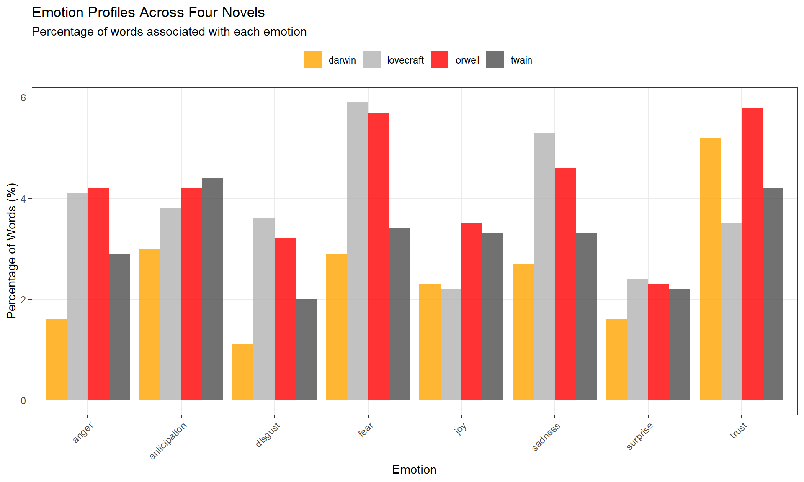
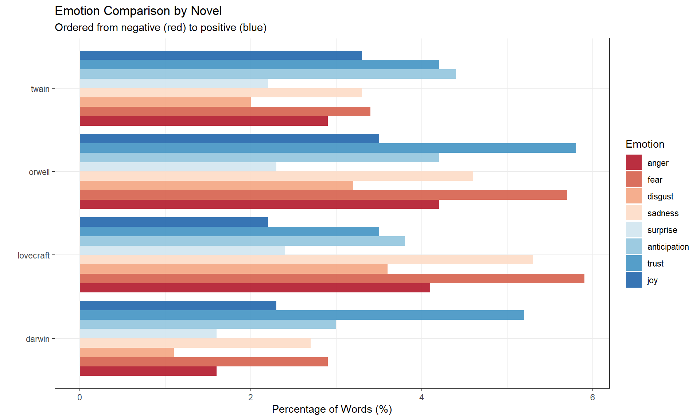
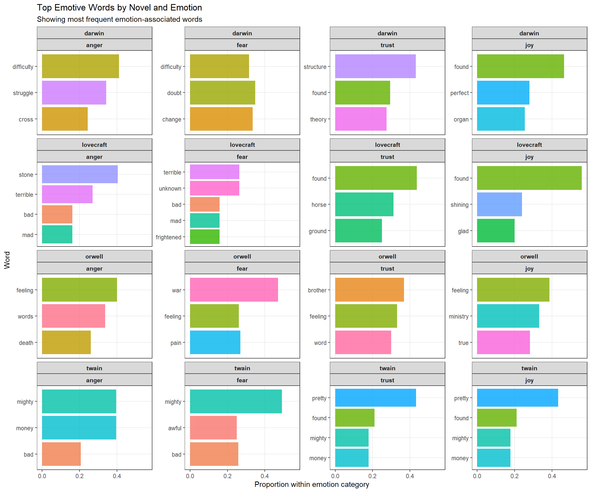
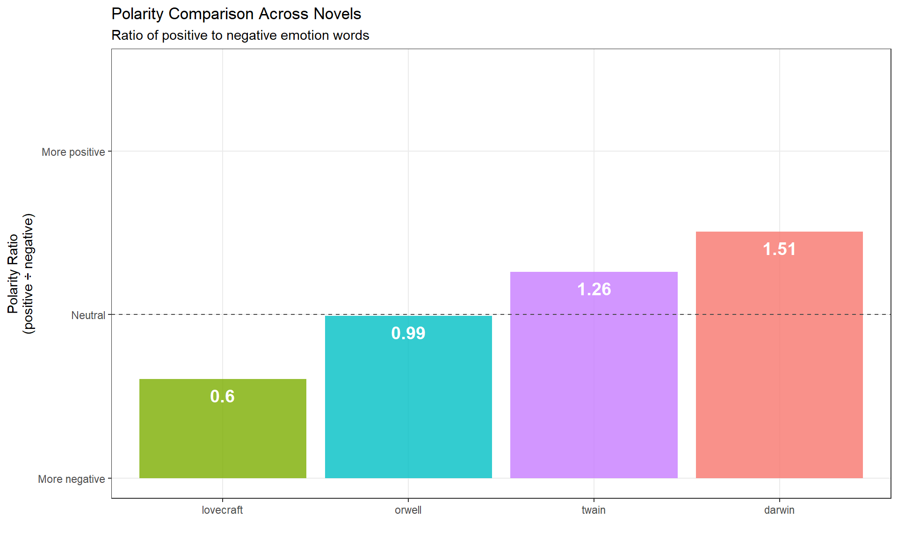
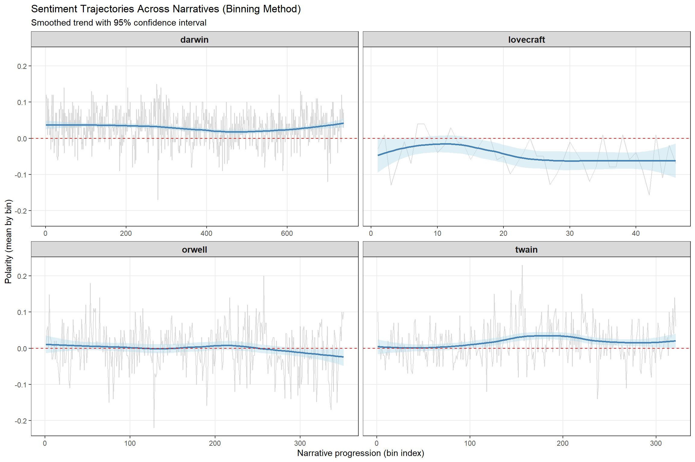
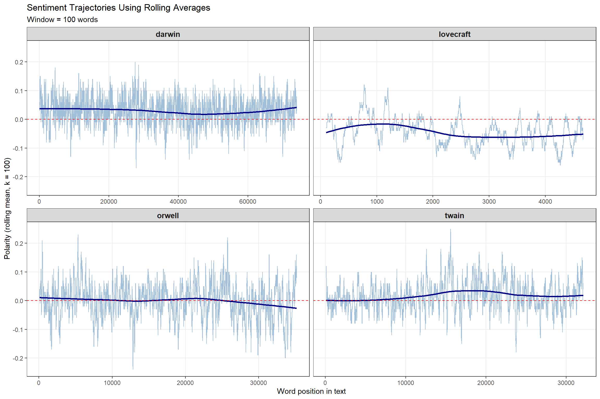
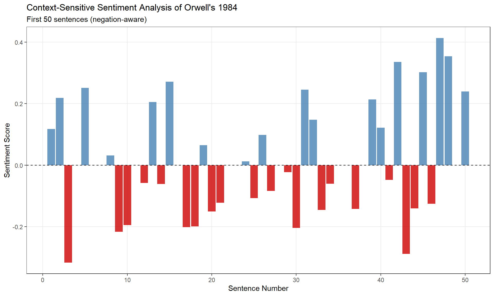

Code
install.packages(c("tidyverse", "tidytext", "sentimentr", "Hmisc",
"zoo", "flextable", "checkdown")) 
This tutorial introduces Sentiment Analysis (SA) in R — a powerful method for extracting information about emotion and opinion from natural language (Silge, Robinson, and Robinson 2017). We’ll use modern R packages including sentimentr (Rinker 2021) and tidytext (Silge and Robinson 2016), along with the Word-Emotion Association Lexicon (Mohammad and Turney 2013).

By the end of this tutorial, you will be able to:
Martin Schweinberger. 2026. Sentiment Analysis in R. The Language Technology and Data Analysis Laboratory (LADAL), The University of Queensland, Australia. url: https://ladal.edu.au/tutorials/sentiment/sentiment.html (Version 3.1.1). doi: 10.5281/zenodo.19332959.
Sentiment Analysis (SA) is a computational method for extracting information about emotion, opinion, or attitude from natural language (Silge, Robinson, and Robinson 2017). SA has been successfully applied across disciplines including psychology, economics, education, political science, and social sciences.
SA offers several advantages over traditional methods:
✓ Fully replicable: Emotion coding is automated and consistent
✓ Scalable: Can analyze thousands of documents quickly
✓ Quantitative: Produces numerical scores for statistical analysis
✓ Unobtrusive: Can analyze existing text without surveys or experiments
Many SA tools provide only polarity (positive vs. negative). However, linguistics research often requires more nuanced information. This tutorial uses the Word-Emotion Association Lexicon, which provides scores for eight core emotions:
| Emotion | Example Words |
|---|---|
| Joy | happy, beautiful, wonderful |
| Trust | safe, honest, reliable |
| Anticipation | ready, hope, expect |
| Surprise | wow, sudden, amazing |
| Sadness | cry, tragedy, loss |
| Fear | afraid, terror, panic |
| Disgust | sick, ugly, awful |
| Anger | fit, burst, hate |
This fine-grained approach allows us to investigate specific emotional dimensions rather than just crude positive-negative distinctions.
Before starting this tutorial, we recommend familiarity with:
The Word-Emotion Association Lexicon (Mohammad and Turney 2013) comprises 10,170 terms with emotion associations based on crowd-sourced ratings from Amazon Mechanical Turk:
How it works: Raters were asked whether each word was associated with one or more of eight emotions. The resulting associations are highly reliable and capture intuitive emotional connotations.
If you haven’t already installed the required packages:
install.packages(c("tidyverse", "tidytext", "sentimentr", "Hmisc",
"zoo", "flextable", "checkdown")) library(tidyverse) # data manipulation & ggplot2
library(tidytext) # text mining
library(sentimentr) # context-sensitive sentiment
library(Hmisc) # binning with cut2()
library(zoo) # rolling means with rollapply()
library(flextable) # formatted tables
library(checkdown) # interactive exercises
options(stringsAsFactors = FALSE)
options(scipen = 999) We’ll analyze four classic texts to demonstrate sentiment analysis:
# load texts
darwin <- base::readRDS(here::here("tutorials/sentiment/data", "origindarwin.rda"))
twain <- base::readRDS(here::here("tutorials/sentiment/data", "twainhuckfinn.rda"))
orwell <- base::readRDS(here::here("tutorials/sentiment/data", "orwell.rda"))
lovecraft <- base::readRDS(here::here("tutorials/sentiment/data", "lovecraftcolor.rda")) head(darwin, 10) |
|---|
THE ORIGIN OF SPECIES |
BY |
CHARLES DARWIN |
AN HISTORICAL SKETCH |
OF THE PROGRESS OF OPINION ON |
THE ORIGIN OF SPECIES |
INTRODUCTION |
When on board H.M.S. 'Beagle,' as naturalist, I was much struck |
with certain facts in the distribution of the organic beings in- |
habiting South America, and in the geological relations of the |
Before sentiment analysis, we need to clean and tokenize the texts.
# function to clean and tokenize text
txtclean <- function(x, title) {
x |>
# convert to UTF-8 encoding
iconv(to = "UTF-8") |>
# lowercase
base::tolower() |>
# collapse into single string
paste0(collapse = " ") |>
# remove extra whitespace
stringr::str_squish() |>
# split into words
stringr::str_split(" ") |>
unlist() |>
# convert to tibble
tibble::tibble() |>
# rename column
dplyr::select(word = 1, everything()) |>
# add novel identifier
dplyr::mutate(novel = title) |>
# remove stopwords (the, a, an, etc.)
dplyr::anti_join(tidytext::stop_words, by = "word") |>
# remove non-alphabetic characters
dplyr::mutate(word = stringr::str_remove_all(word, "\\W")) |>
# remove empty strings
dplyr::filter(word != "")
} Stopwords (e.g., the, a, an, of) are high-frequency function words with little semantic content. Removing them:
However: For context-sensitive analysis (Part III), we’ll keep stopwords because negators like not and never affect sentiment.
# process all four texts
darwin_clean <- txtclean(darwin, "darwin")
lovecraft_clean <- txtclean(lovecraft, "lovecraft")
orwell_clean <- txtclean(orwell, "orwell")
twain_clean <- txtclean(twain, "twain") word | novel |
|---|---|
origin | darwin |
species | darwin |
charles | darwin |
darwin | darwin |
historical | darwin |
sketch | darwin |
progress | darwin |
opinion | darwin |
origin | darwin |
species | darwin |
Now we join the cleaned texts with the Word-Emotion Association Lexicon:
If you use the Word-Emotion Association Lexicon (NRC), please cite
Mohammad, Saif M, and Peter D Turney. 2013. Crowdsourcing a Word-Emotion Association Lexicon. Computational Intelligence 29 (3): 436–65. https://doi.org/https://doi.org/10.1111/j.1467-8640.2012.00460.x.
nrc <- tidytext::get_sentiments(lexicon = "nrc")
# combine texts and join with sentiment lexicon
novels_anno <- rbind(darwin_clean, twain_clean, orwell_clean, lovecraft_clean) |>
dplyr::group_by(novel) |>
# count total words per novel
dplyr::mutate(words = n()) |>
# join with sentiment lexicon
dplyr::left_join(nrc, by = "word", relationship =
"many-to-many") |>
dplyr::mutate(
novel = factor(novel),
sentiment = factor(sentiment)
) word | novel | words | sentiment |
|---|---|---|---|
origin | darwin | 76,710 | |
species | darwin | 76,710 | |
charles | darwin | 76,710 | |
darwin | darwin | 76,710 | |
historical | darwin | 76,710 | |
sketch | darwin | 76,710 | |
progress | darwin | 76,710 | anticipation |
progress | darwin | 76,710 | joy |
progress | darwin | 76,710 | positive |
opinion | darwin | 76,710 |
Words not in the NRC lexicon receive NA for sentiment (neutral/unassociated).
Summarize sentiment frequencies and calculate percentages:
novels <- novels_anno |>
dplyr::group_by(novel, sentiment) |>
dplyr::summarise(
sentiment_freq = n(),
words = unique(words),
.groups = "drop"
) |>
# remove NA sentiments
dplyr::filter(!is.na(sentiment)) |>
# calculate percentage of emotive words
dplyr::mutate(percentage = round(sentiment_freq / words * 100, 1)) novel | sentiment | sentiment_freq | words | percentage |
|---|---|---|---|---|
darwin | anger | 1,255 | 76,710 | 1.6 |
darwin | anticipation | 2,291 | 76,710 | 3.0 |
darwin | disgust | 851 | 76,710 | 1.1 |
darwin | fear | 2,236 | 76,710 | 2.9 |
darwin | joy | 1,754 | 76,710 | 2.3 |
darwin | negative | 4,294 | 76,710 | 5.6 |
darwin | positive | 6,469 | 76,710 | 8.4 |
darwin | sadness | 2,050 | 76,710 | 2.7 |
darwin | surprise | 1,239 | 76,710 | 1.6 |
darwin | trust | 3,955 | 76,710 | 5.2 |
lovecraft | anger | 197 | 4,847 | 4.1 |
lovecraft | anticipation | 184 | 4,847 | 3.8 |
lovecraft | disgust | 173 | 4,847 | 3.6 |
lovecraft | fear | 288 | 4,847 | 5.9 |
lovecraft | joy | 106 | 4,847 | 2.2 |
# plot 8 core emotions (exclude positive/negative polarity)
novels |>
dplyr::filter(
sentiment != "positive",
sentiment != "negative"
) |>
ggplot(aes(sentiment, percentage, fill = novel)) +
geom_col(position = position_dodge(), alpha = 0.8) +
scale_fill_manual(
name = "",
values = c("orange", "gray70", "red", "grey30")
) +
theme_bw() +
labs(
title = "Emotion Profiles Across Four Novels",
subtitle = "Percentage of words associated with each emotion",
x = "Emotion", y = "Percentage of Words (%)"
) +
theme(
legend.position = "top",
panel.grid.minor = element_blank(),
axis.text.x = element_text(angle = 45, hjust = 1)
) 
Reorder emotions from negative (red) to positive (blue):
novels |>
dplyr::filter(
sentiment != "positive",
sentiment != "negative"
) |>
dplyr::mutate(
sentiment = factor(sentiment, levels = c(
"anger", "fear", "disgust", "sadness",
"surprise", "anticipation", "trust", "joy"
))
) |>
ggplot(aes(novel, percentage, fill = sentiment)) +
geom_col(position = position_dodge(), alpha = 0.9) +
scale_fill_brewer(palette = "RdBu", name = "Emotion") +
theme_bw() +
labs(
title = "Emotion Comparison by Novel",
subtitle = "Ordered from negative (red) to positive (blue)",
x = "", y = "Percentage of Words (%)"
) +
theme(legend.position = "right") +
coord_flip() 
Q1. What does it mean if a novel has 5% “joy” words?
Q2. Why do we remove stopwords before sentiment analysis?
Which specific words contribute most to each emotion category? Let’s find the top emotive words.
We’ll focus on four emotions for clarity:
novels_impw <- novels_anno |>
dplyr::filter(
!is.na(sentiment),
# focus on 4 core emotions
sentiment %in% c("anger", "fear", "trust", "joy")
) |>
# order emotions from negative to positive
dplyr::mutate(
sentiment = factor(sentiment, levels = c("anger", "fear", "trust", "joy"))
) |>
dplyr::group_by(novel, sentiment) |>
# count word frequencies by sentiment
dplyr::count(word, sort = TRUE) |>
# get top 3 words per novel × sentiment combination
dplyr::top_n(3, n) |>
# calculate proportion within each group
dplyr::mutate(score = n / sum(n)) |>
dplyr::ungroup() novel | sentiment | word | n | score |
|---|---|---|---|---|
darwin | trust | structure | 243 | 0.4308511 |
darwin | trust | found | 166 | 0.2943262 |
darwin | joy | found | 166 | 0.4649860 |
darwin | trust | theory | 155 | 0.2748227 |
twain | trust | pretty | 148 | 0.4327485 |
twain | joy | pretty | 148 | 0.4327485 |
orwell | fear | war | 114 | 0.4710744 |
darwin | fear | doubt | 106 | 0.3486842 |
darwin | fear | change | 102 | 0.3355263 |
darwin | joy | perfect | 100 | 0.2801120 |
darwin | anger | difficulty | 96 | 0.4120172 |
darwin | fear | difficulty | 96 | 0.3157895 |
darwin | joy | organ | 91 | 0.2549020 |
darwin | anger | struggle | 80 | 0.3433476 |
twain | trust | found | 72 | 0.2105263 |
novels_impw |>
dplyr::group_by(novel) |>
# get top 20 words overall
dplyr::slice_max(score, n = 20) |>
dplyr::arrange(desc(score)) |>
dplyr::ungroup() |>
ggplot(aes(x = reorder(word, score), y = score, fill = word)) +
facet_wrap(novel ~ sentiment, ncol = 4, scales = "free_y") +
geom_col(show.legend = FALSE, alpha = 0.8) +
coord_flip() +
theme_bw() +
labs(
title = "Top Emotive Words by Novel and Emotion",
subtitle = "Showing most frequent emotion-associated words",
x = "Word", y = "Proportion within emotion category"
) +
theme(
strip.text = element_text(face = "bold"),
panel.grid.minor = element_blank()
) 
Each panel shows the top words for a specific novel × emotion combination. For example:
This reveals genre-specific emotion vocabularies.
Polarity measures the ratio of positive to negative emotion words. It’s a simple but powerful metric for overall emotional tone.
polarity_scores <- novels |>
# keep only positive/negative tags
dplyr::filter(sentiment %in% c("positive", "negative")) |>
dplyr::select(novel, sentiment, sentiment_freq) |>
# pivot wider for calculation
tidyr::pivot_wider(
names_from = sentiment,
values_from = sentiment_freq,
values_fill = 0
) |>
# calculate polarity ratio
dplyr::mutate(polarity = positive / negative) novel | negative | positive | polarity |
|---|---|---|---|
darwin | 4,294 | 6,469 | 1.5065207 |
lovecraft | 526 | 318 | 0.6045627 |
orwell | 3,455 | 3,425 | 0.9913169 |
twain | 1,892 | 2,386 | 1.2610994 |
polarity_scores |>
ggplot(aes(x = reorder(novel, polarity), y = polarity, fill = novel)) +
geom_col(alpha = 0.8, show.legend = FALSE) +
geom_text(
aes(y = polarity - 0.1, label = round(polarity, 2)),
color = "white", size = 5, fontface = "bold"
) +
geom_hline(yintercept = 1, linetype = "dashed", color = "gray30") +
theme_bw() +
labs(
title = "Polarity Comparison Across Novels",
subtitle = "Ratio of positive to negative emotion words",
y = "Polarity Ratio\n(positive ÷ negative)",
x = ""
) +
scale_y_continuous(
breaks = c(0, 1, 2),
labels = c("More negative", "Neutral", "More positive")
) +
coord_cartesian(y = c(0, 2.5)) +
theme(panel.grid.minor = element_blank()) 
All four novels have polarity > 1 (more positive than negative), but Lovecraft is closest to neutral, reflecting its horror/dark themes.
Q1. A novel has 800 positive emotion words and 400 negative emotion words. What is its polarity ratio?
Q2. What does a polarity ratio of 0.8 indicate?
How does sentiment change as a narrative unfolds? We’ll use two methods: binning and rolling averages.
Binning divides text into equal-sized chunks and calculates sentiment within each bin.
novels_bin <- novels_anno |>
dplyr::group_by(novel) |>
# keep only polarity tags
dplyr::filter(is.na(sentiment) | sentiment %in% c("negative", "positive")) |>
# convert to numeric: positive = +1, negative = −1, neutral = 0
dplyr::mutate(
sentiment = as.character(sentiment),
sentiment = case_when(
is.na(sentiment) ~ "0",
TRUE ~ sentiment
),
sentiment = case_when(
sentiment == "0" ~ 0,
sentiment == "positive" ~ 1,
TRUE ~ -1
),
# create word index
id = 1:n(),
# divide into bins of 100 words each
index = as.numeric(Hmisc::cut2(id, m = 100))
) |>
dplyr::group_by(novel, index) |>
# calculate mean polarity per bin
dplyr::summarize(
polarity = mean(sentiment),
.groups = "drop"
) novel | index | polarity |
|---|---|---|
darwin | 1 | 0.03960396 |
darwin | 2 | 0.12000000 |
darwin | 3 | 0.11000000 |
darwin | 4 | 0.09000000 |
darwin | 5 | 0.01000000 |
darwin | 6 | 0.11000000 |
darwin | 7 | 0.03000000 |
darwin | 8 | 0.08000000 |
darwin | 9 | 0.04000000 |
darwin | 10 | 0.01000000 |
darwin | 11 | 0.01000000 |
darwin | 12 | 0.03000000 |
darwin | 13 | -0.03000000 |
darwin | 14 | 0.04000000 |
darwin | 15 | 0.09000000 |
Bin size matters: Too small = noisy; too large = loses detail. 100 words is typical.
ggplot(novels_bin, aes(index, polarity)) +
facet_wrap(~ novel, scales = "free_x", ncol = 2) +
geom_line(alpha = 0.3, color = "gray50") +
geom_smooth(se = TRUE, color = "steelblue", fill = "lightblue") +
geom_hline(yintercept = 0, linetype = "dashed", color = "red") +
theme_bw() +
labs(
title = "Sentiment Trajectories Across Narratives (Binning Method)",
subtitle = "Smoothed trend with 95% confidence interval",
y = "Polarity (mean by bin)",
x = "Narrative progression (bin index)"
) +
theme(
strip.text = element_text(face = "bold", size = 11),
panel.grid.minor = element_blank()
) `geom_smooth()` using method = 'loess' and formula = 'y ~ x'
For example, if Orwell’s 1984 shows declining polarity toward the end, this reflects the increasingly dystopian/pessimistic narrative arc.
Rolling averages (also called moving averages) calculate the mean within a sliding window.
Rolling averages are NOT ideal for tracking changes — they smooth data too much. Use binning to detect actual shifts; use rolling averages to visualize overall trends.
novels_change <- novels_anno |>
# keep only polarity
dplyr::filter(is.na(sentiment) | sentiment %in% c("negative", "positive")) |>
dplyr::group_by(novel) |>
# convert to numeric
dplyr::mutate(
sentiment = as.character(sentiment),
sentiment = case_when(
is.na(sentiment) ~ "0",
TRUE ~ sentiment
),
sentiment = case_when(
sentiment == "0" ~ 0,
sentiment == "positive" ~ 1,
TRUE ~ -1
),
id = 1:n()
) |>
dplyr::reframe(
id = id,
# rolling mean with window = 100 words
rmean = zoo::rollapply(
sentiment,
width = 100,
FUN = mean,
align = "right",
fill = NA
)
) |>
na.omit()novel | id | rmean |
|---|---|---|
darwin | 100 | 0.04 |
darwin | 101 | 0.04 |
darwin | 102 | 0.04 |
darwin | 103 | 0.04 |
darwin | 104 | 0.04 |
darwin | 105 | 0.04 |
darwin | 106 | 0.04 |
darwin | 107 | 0.04 |
darwin | 108 | 0.04 |
darwin | 109 | 0.04 |
darwin | 110 | 0.04 |
darwin | 111 | 0.04 |
darwin | 112 | 0.04 |
darwin | 113 | 0.04 |
darwin | 114 | 0.03 |
ggplot(novels_change, aes(id, rmean)) +
facet_wrap(~ novel, scales = "free_x", ncol = 2) +
geom_line(alpha = 0.5, color = "steelblue") +
geom_smooth(se = F, color = "darkblue", fill = "lightblue", method = "loess") +
geom_hline(yintercept = 0, linetype = "dashed", color = "red") +
theme_bw() +
labs(
title = "Sentiment Trajectories Using Rolling Averages",
subtitle = "Window = 100 words",
y = "Polarity (rolling mean, k = 100)",
x = "Word position in text"
) +
theme(
strip.text = element_text(face = "bold", size = 11),
panel.grid.minor = element_blank()
) `geom_smooth()` using formula = 'y ~ x'
Q1. What is the main difference between binning and rolling averages?
Q2. Why is binning generally preferred over rolling averages for detecting sentiment changes in narratives?
So far, we’ve ignored how context affects meaning. The sentence “You are a good boy” and “You are not a good boy” would receive identical scores because we removed stopwords including negators.
In this section, we incorporate negation using the sentimentr package, which accounts for words like not, never, neither that reverse polarity.
We focus on polarity only (positive/negative), not the 8 core emotions. Context-sensitive emotion analysis would require a custom sentiment lexicon with negation rules for each emotion.
We’ll analyze the first 50 sentences from Orwell’s 1984:
# split into sentences
orwell_sent <- orwell |>
iconv(to = "latin1") |>
paste0(collapse = " ") |>
# remove hyphenation
stringr::str_replace_all("([a-z])- ([a-z])", "\\1\\2") |>
stringr::str_squish() |>
tibble::tibble() |>
dplyr::select(text = 1) |>
# tokenize by sentences
tidytext::unnest_tokens(sentence, text, token = "sentences") |>
# keep first 50 sentences
dplyr::slice_head(n = 50) sentence |
|---|
1984 george orwell part 1, chapter 1 it was a bright cold day in april, and the clocks were striking thirteen. |
winston smith, his chin nuzzled into his breast in an effort to escape the vile wind, slipped quickly through the glass doors of victory mansions, though not quickly enough to prevent a swirl of gritty dust from entering along with him. |
the hallway smelt of boiled cabbage and old rag mats. |
at one end of it a coloured poster, too large for indoor display, had been tacked to the wall. |
it depicted simply an enormous face, more than a metre wide: the face of a man of about forty-five, with a heavy black moustache and ruggedly handsome features. |
winston made for the stairs. |
it was no use trying the lift. |
even at the best of times it was seldom working, and at present the electric current was cut off during daylight hours. |
it was part of the economy drive in preparation for hate week. |
the flat was seven flights up, and winston, who was thirty-nine and had a varicose ulcer above his right ankle, went slowly, resting several times on the way. |
The sentimentr::sentiment() function accounts for:
orwell_sent_class <- orwell_sent |>
dplyr::mutate(
# calculate context-sensitive sentiment
sentiment_score = sentimentr::sentiment(sentence)$sentiment
) sentence | sentiment_score |
|---|---|
1984 george orwell part 1, chapter 1 it was a bright cold day in april, and the clocks were striking thirteen. | 0.11785113 |
winston smith, his chin nuzzled into his breast in an effort to escape the vile wind, slipped quickly through the glass doors of victory mansions, though not quickly enough to prevent a swirl of gritty dust from entering along with him. | 0.21864327 |
the hallway smelt of boiled cabbage and old rag mats. | -0.31622777 |
at one end of it a coloured poster, too large for indoor display, had been tacked to the wall. | 0.00000000 |
it depicted simply an enormous face, more than a metre wide: the face of a man of about forty-five, with a heavy black moustache and ruggedly handsome features. | 0.25068871 |
winston made for the stairs. | 0.00000000 |
it was no use trying the lift. | 0.00000000 |
even at the best of times it was seldom working, and at present the electric current was cut off during daylight hours. | 0.03198011 |
it was part of the economy drive in preparation for hate week. | -0.21650635 |
the flat was seven flights up, and winston, who was thirty-nine and had a varicose ulcer above his right ankle, went slowly, resting several times on the way. | -0.19498011 |
Example:
- “This is good” → +0.35
- “This is not good” → −0.35 (negation reverses polarity)
- “This is very good” → +0.50 (intensifier amplifies)
orwell_sent_class |>
dplyr::mutate(sentence_id = 1:n()) |>
ggplot(aes(x = sentence_id, y = sentiment_score)) +
geom_col(aes(fill = sentiment_score > 0), alpha = 0.8, show.legend = FALSE) +
geom_hline(yintercept = 0, linetype = "dashed") +
scale_fill_manual(values = c("red3", "steelblue")) +
theme_bw() +
labs(
title = "Context-Sensitive Sentiment Analysis of Orwell's 1984",
subtitle = "First 50 sentences (negation-aware)",
x = "Sentence Number", y = "Sentiment Score"
) +
theme(panel.grid.minor = element_blank()) 
Q1. Why does context-sensitive sentiment analysis keep stopwords instead of removing them?
Q2. The sentence “This is not very good” receives a sentiment score of −0.45. What does this tell us?
| Goal | Method |
|---|---|
| Compare overall emotionality of texts | Basic SA with NRC lexicon |
| Identify key emotive vocabulary | Top words analysis |
| Measure positivity/negativity | Polarity ratio |
| Track narrative arc changes | Binning (preferred) or rolling averages |
| Account for negation/intensifiers | sentimentr package |
Always validate results with close reading and domain expertise.
For more advanced sentiment analysis:
sentimentr documentation: Context-sensitive methodssyuzhet package: Narrative trajectory analysisMartin Schweinberger. 2026. Sentiment Analysis in R. The Language Technology and Data Analysis Laboratory (LADAL), The University of Queensland, Australia. url: https://ladal.edu.au/tutorials/sentiment/sentiment.html (Version 3.1.1). doi: 10.5281/zenodo.19332959.
@manual{martinschweinberger2026sentiment,
author = {Martin Schweinberger},
title = {Sentiment Analysis in R},
year = {2026},
note = {https://ladal.edu.au/tutorials/sentiment/sentiment.html},
organization = {The Language Technology and Data Analysis Laboratory (LADAL), The University of Queensland, Australia},
edition = {2026.03.28}
doi = {}
}sessionInfo() R version 4.4.2 (2024-10-31 ucrt)
Platform: x86_64-w64-mingw32/x64
Running under: Windows 11 x64 (build 26200)
Matrix products: default
locale:
[1] LC_COLLATE=English_United States.utf8
[2] LC_CTYPE=English_United States.utf8
[3] LC_MONETARY=English_United States.utf8
[4] LC_NUMERIC=C
[5] LC_TIME=English_United States.utf8
time zone: Australia/Brisbane
tzcode source: internal
attached base packages:
[1] stats graphics grDevices datasets utils methods base
other attached packages:
[1] lubridate_1.9.4 forcats_1.0.0 purrr_1.0.4 readr_2.1.5
[5] tidyverse_2.0.0 checkdown_0.0.13 syuzhet_1.0.7 zoo_1.8-13
[9] tidytext_0.4.2 tidyr_1.3.2 tibble_3.2.1 textdata_0.4.5
[13] stringr_1.5.1 sentimentr_2.9.0 Hmisc_5.2-2 ggplot2_4.0.2
[17] flextable_0.9.11 dplyr_1.2.0
loaded via a namespace (and not attached):
[1] tidyselect_1.2.1 farver_2.1.2 S7_0.2.1
[4] fastmap_1.2.0 textshape_1.7.5 fontquiver_0.2.1
[7] janeaustenr_1.0.0 digest_0.6.39 rpart_4.1.23
[10] timechange_0.3.0 lifecycle_1.0.5 cluster_2.1.6
[13] tokenizers_0.3.0 magrittr_2.0.3 compiler_4.4.2
[16] rlang_1.1.7 tools_4.4.2 yaml_2.3.10
[19] qdapRegex_0.7.8 data.table_1.17.0 knitr_1.51
[22] labeling_0.4.3 askpass_1.2.1 htmlwidgets_1.6.4
[25] xml2_1.3.6 textclean_0.9.3 RColorBrewer_1.1-3
[28] withr_3.0.2 foreign_0.8-87 nnet_7.3-19
[31] grid_4.4.2 gdtools_0.5.0 colorspace_2.1-1
[34] scales_1.4.0 cli_3.6.4 rmarkdown_2.30
[37] ragg_1.3.3 generics_0.1.3 rstudioapi_0.17.1
[40] tzdb_0.4.0 commonmark_2.0.0 splines_4.4.2
[43] base64enc_0.1-6 vctrs_0.7.1 Matrix_1.7-2
[46] jsonlite_1.9.0 fontBitstreamVera_0.1.1 litedown_0.9
[49] hms_1.1.3 patchwork_1.3.0 Formula_1.2-5
[52] htmlTable_2.4.3 systemfonts_1.3.1 glue_1.8.0
[55] codetools_0.2-20 stringi_1.8.4 gtable_0.3.6
[58] pillar_1.10.1 htmltools_0.5.9 openssl_2.3.2
[61] R6_2.6.1 textshaping_1.0.0 evaluate_1.0.3
[64] lattice_0.22-6 markdown_2.0 lexicon_1.2.1
[67] backports_1.5.0 SnowballC_0.7.1 renv_1.1.7
[70] fontLiberation_0.1.0 Rcpp_1.1.1 zip_2.3.2
[73] uuid_1.2-1 nlme_3.1-166 gridExtra_2.3
[76] checkmate_2.3.2 mgcv_1.9-1 officer_0.7.3
[79] xfun_0.56 fs_1.6.5 pkgconfig_2.0.3 This tutorial was re-developed with the assistance of Claude (claude.ai), a large language model created by Anthropic. Claude was used to help revise the tutorial text, structure the instructional content, generate the R code examples, and write the checkdown quiz questions and feedback strings. All content was reviewed, edited, and approved by the author (Martin Schweinberger), who takes full responsibility for the accuracy and pedagogical appropriateness of the material. The use of AI assistance is disclosed here in the interest of transparency and in accordance with emerging best practices for AI-assisted academic content creation.